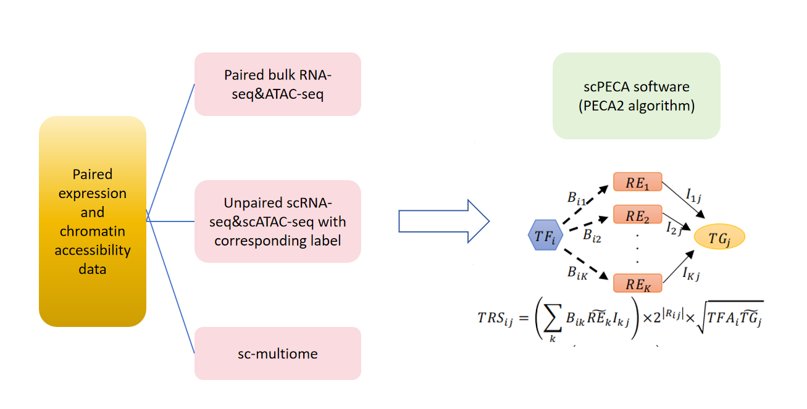

scPECA GRNDB
scPECA GRNDB is a database containing over 500 gene regulatory networks (GRNs) at the tissue/organ or cell-type level (covering both human and mouse). Each GRN is generated by the scPECA software using paired transcriptome data and chromatin accessibility information from different layers. We provide downloads of all generated GRNs, details of the source data, and a complete scPECA software tutorial so users can build GRNs from their own data.
